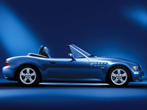
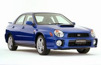

|
Урррааа!!! Каникулы! Отпуск, который не отпуск, длинные отгулы, которые не отгулы.
Долгие, как поиски первой работы, но при условии, что зарплату продолжают регулярно
платить :-). Что еще нужно для беззаботной жизни?! :-)
 Примерно так я радовался в середине ноября 2001 года, когда проект, в котором я работал
последние полтора года, наконец-то подошел к концу.
То есть, закончиться он должен был
еще в апреле, но так получилось, что мне предложили/приказали :-) остаться и поучаствовать
в его продолжении (улучшении/развитии). Вот так я и просидел полтора года в доблестном
CIBC (будучи при этом постоянным сотрудником IBM). Но все, хорошее ли, плохое - рано
или поздно подходит к концу.
Примерно так я радовался в середине ноября 2001 года, когда проект, в котором я работал
последние полтора года, наконец-то подошел к концу.
То есть, закончиться он должен был
еще в апреле, но так получилось, что мне предложили/приказали :-) остаться и поучаствовать
в его продолжении (улучшении/развитии). Вот так я и просидел полтора года в доблестном
CIBC (будучи при этом постоянным сотрудником IBM). Но все, хорошее ли, плохое - рано
или поздно подходит к концу.
И когда второй этап проекта закончился, то на последний, третий этап меня уже не
пригласили, заявив, что я слишком дорого обхожусь банку :-) чтобы держать меня на
поддержке готового продукта. Дескать, IBM выставляет за меня совершенно нескромные
счета, так что я свободен как птица в полете! И я ничуть по этому поводу не страдал.
Откровенно говоря, в конце проекта стало слегка скучно. И вот - я на бэнче! То бишь, на
скамейке :-) Термин от контрактников, постоянно работающих на агенства - между
контрактами/проектами они "сидят" на бэнче/скамейке, но какую-то зарплату все-таки
получают. В моем случае - я не контрактник, а очень даже на постоянной работе, так что
никакой разницы в зарплате нет - сижу-ли я на этой скамейке, или работаю в поте лица. И так
как кроме всего прочего я вхожу в категорию mobile workers, то могу работать как в оффисе
IBM, так и дома. Естественно, я выбрал работу дома :-) А сама работа заключалась в
расплывчатом совете моего мэнэджера - ты поизучай что-нибудь. Покопайся во внутренней
IBM-овской сети. Вобщем, сам придумай!
Середина ноября была не самым лучшим временем для начала нового проекта. Финансовый
год подходит к концу. К тому же сам год был далеко не самым лучшим, и многие компании
даже и не думали о новых проектах. А это значит, что и в моем департаменте в IBM новых
проектов было не много, и я приготовился просто отдыхать - с чувством и с расстановкой!
Отвлекся я от этого непыльного занятия всего лишь один раз, сходив на 3-х дневный курс в
IBM.
Ощущения просто изумительные! Последний раз подобный отдых у меня был в школе на
летних каникулах где-то в середине 80-х годов летом после 7 класса. После этого уже было
совсем не так. Летняя школа в Красноярском универе, следующим летом практика на
местном ВЦ, через год абитура - поступление в НГУ (матфак), потом работа в институте шефа - не
только летом, а и вообще в любую свободную минуту (под 'свободной минутой' следует
понимать все, вплоть до 'ненужного' времени на некоторые лекции в универе), а также
ночные вахты в универовских терминальных классах :-) В то время я открыл для себя
волшебные свойства настойки корня женьшеня. Страшное дело - хватало всего 3-4 часов сна
в сутки. Правда через пару месяцев каким-то нервным становишься :-) Потом окончание
универа, открытие собственной фирмы, работа, работа, работа... Разорение фирмы и возврат к
труду наемного рабочего (на моего-же бывшего заказчика :-) Опять работа, работа, работа...
Переезд в Канаду, и снова работа, работа, работа...
Но я отвлекся. Суть в том, что впервые за последние 18 лет я получил КАНИКУЛЫ!
Книги, инет, телевизор... Через пару недель все это слегка надоело. Захотелось в кои-то века
сделать что-нибудь своими руками :-) Решил сделать стойку для винных бутылок (давно
хотелось). Кстати, в магазинах они стоят удивительно дорого, да к тому-же имеют как
правило совершенно непотребно-мелкий размер - обычно только на 5-6 бутылок. Я решил,
что с нашей любовью к винам, нужно соорудить что-то бутылок на 18! (3 полки по 6 бутылок
:-).
(Наташа: Да,.. у Андрюши всегда наблюдалась мания глобализма. Еще в "древней" России:
- Андрюша, купи также, пожалуйста, мыло хозяйственное.
- Маленькая, нам десяточка хватит?)
Забегая вперед замечу, что мы еще ни разу не заполнили стойку полностью. Ближайшее по
заполненности состояние - перед днем рождения - с десяток бутылок :-) То есть я скорее
всего переоценил наши возможности :-) Но надо отдать должное идее - развлекся я знатно!
Кстати, с финансовой стороны проект себя не оправдал - с учетом дополнительных
инструментов, закупленных специально под этот проект, стоимость стойки сравнялась с
магазинной :-) Но утешает то, что инструменты все-таки не одноразовые. Может быть когда-
нибудь... еще одну стойку сделаю :-)))
(Наташа: может быть когда-нибудь... на следующих Андрюшиных каникулах... сии
инструменты сгодятся на то, чтоб наконец-то починить двери в наших шкафах.)
Все хорошо, но на winerack я потратил меньше 2 дней (с учетом пары часов на разработку
дизайна, еще пара часов на закупку материалов и инструментов, остальное время на сборку).
После этого я спокойно вернулся к испытанному набору: книги, инет, телевизор. А, да, еще
пиво конечно :-) Кстати, о пиве - я недавно случайно попробовал новый сорт пива, с
совершенно странным название KOZEL :-) - чешское.
Мне сильно понравилось. Это из класса светлых лагеров, слегка горьковатое (как и дОлжно
быть нормальному пиву!). Слегка напоминает Pilsner Urquel, но с чуть более мягким вкусом. Мягче, но в меру :-).
Хорошо пенится, но не слишком сильно газированное (ненавижу газ! лучшее пиво -
бочковое! а весь этот газ - извращение для консервированных бутылок). В общем,
рекомендую. Не понравится, так хоть попробуете :-)
Но пиво в малых дозах имеет странный эффект на организм и в частности на сознание :-)
Впрочем, в больших дозах оно имеет не менее сильный эффект, но он, этот эффект, уже не
странный, а легко предсказуемый. Так вот, именно пиво в не слишком больших дозах каким-
то образом раскопало в завалах моей памяти старую идею поиграться с X10 железяками, благо, что кое-что у нас уже
было. Идея состояла в оформлении дома на рождество и Новый Год различными гирляндами
и прочими лампочками. Но суть идеи не сами гирлянды, а то, как они должны светиться и
моргать. :-) Проще говоря, я давно хотел соорудить управление этими гирляндами с помощью
компьютера. Благо, что вспомнил я об этом достаточно рано перед праздниками (а точнее, не
слишком поздно), и успел-таки заказать и получить посылку с недостающими железяками -
пару десятков управляющих блоков, блок интерфеса с компьютером и тому подобное,
быстренько смотался в WallMart и сгреб там почти все, что у них там осталось на тот момент
(с десяток гирлянд), и уселся настраивать всю эту мешанину. Вариантов было ровно два -
софтина с X10 сайта, или софтина со SmartHome сайта. Хмм, как выяснилось, ни то, ни
другое совершенно не "заточено" под то, что я собирался делать. А сделать я хотел сначала
что-нибудь примитивно простое - типа переливающихся групп цветов. В смысле, плавно
меняющих цвет. Так вот, проблема с обеими программами оказалась в том, что мне нужно
было написать некий макрос, и зациклить его навечно, точнее, пока сам не выключу, а
стандартный софт похоже даже и не предполагал, что в чью-либо "больную" голову придет
идея использования их системы для управления циклическими процессами. Хмм, не
настолько-уж и запредельное желание.
После внимательного изучения технического описания X10 (нашлись довольно подробные
описания), я понял, что ковыряться в их протоколе руками мне совершенно не хочется. Ну не
улыбается мне эта идея, и все тут :-). Хотя, задним числом стоит признать, что может быть и
зря, протокол там простой, а результат мог-бы получиться слегка устойчивее и проще. Но...
Покопавшись в инете, нашел-таки несколько библиотек, и пару даже на Java. Это был
приятный сюрприз, и в конце концов это дело замерцало/запереливалось :-). Оставалось
развесить гирлянды, и... Получилось не очень плохо :-). Но на следующий год надо будет
придумать что-нибудь более интересное, чем просто переливающиеся цвета.
(Наташа: Переливающиеся цвета - это более чем интересно. Проблема в том, как все эти
гирлянды развесить, дабы покруче выглядело. Гирлянд у нас, конечно, было хоть отбавляй.
Изначальный дизайн предполагал развешивание оных по всему "фронтовому" периметру
дома. Я мыслила вылезти из окошка на крышу гаража и там благополучно все те гирлянды
попристреливать. Андрюша сам боится вылазить, переживает, что крыша де под ним
рухнет и он с треском приземлится на свой ненаглядный биммер :-). Но... как обычно, у
русских все делается в последний момент, то бишь вечером 24го декабря. И сей вечер
выдался, на удивление, гадким в смысле погоды, так что мы, едва не окочурившись от
холода, не мудрствуя лукаво, развесили все 6 гирлянд по периметру гаражной двери, одну под
другой. Андрюша взбирался на специально приобретенную для этих целей лесенку, а я
прозябала у подножия оной, держа гирлянду и пристально следя за устойчивостью
сооружения, на вершине коего эквилибрировал мой благоверный. Высшим классом было,
когда он цеплял "сосулечные" гирлянды, которые, кстати, никакого отношения к Х10 и
Java-программированию не имеют, к крыше гаража: стоя на носочке на самой верхушке
лестницы и вытянувшись во весь рост. И все за ради чего? Все равно половина этих сосулек
не светилась. ...Хотя почему же в прошедшем времени? "Пачэчу бил, дарагой? Он и сечас
есть." Андрюша сказал, будем снимать все гирлянды, когда совсем потеплеет. :-) Не знаю,
имел ли он в виду также внутреннее помещение дома, но елку он до сих пор не разобрал :-).
Нетрудно догадаться, что вскоре мне снова стало скучно. Каникулы и не думали кончаться, а
делать было совершенно нечего.

Как раз примерно в это время (конец ноября) пришла пора сменить на нашем биммере
летнюю резину (шины) на зимнюю, поскольку я уже чувствовал, что зимой эта маленькая,
верткая, задне-приводная игрушка будет себя чувствовать как корова на льду. Это
подтверждалось хором голосов в конференции по Z3. То есть нужна была хорошая зимняя
резина. Я остановил свой выбор на Michelin Pilot Alpin (225/50 R16). Это зимняя high-performance резина
со скоростным рейтингом H (примерно до 210км/ч).
Все вышесказанное не слишком важно и не стоило бы потраченных слов если-бы не один,
совершенно случайный, момент: контора, где я переобувал биммера (Active Green&Ross на
Янге) находилась по соседству с дилершипом Subaru :-) А
нужно заметить (это, правда, уже второй момент :-), что на нашем стареньком (1999 года)
Pontiac GrandPrix резина окончательно стерлась, и ездить на ней даже по сухим дорогам было
не слишком приятно, а уж про зиму просто молчу. А то, что на Понтиаке ездила почти
исключительно Наташа, давало дополнительный стимул к размышлениям. Как-то не
спокойно... И я как раз присматривался к новой зимней резине и для Понтиака тоже, но
проблема заключалась в том, что наш лиз подходил к концу в ближайшем июне. И тратить
почти 900 долларов на новые колеса всего на полгода совершенно не хотелось.

Короче говоря, вместо того, чтобы спокойно подождать полчаса, пока будет готов биммер,
занесла меня нелегкая в этот Субаровский дилершип. И чтобы не растягивать повествования,
сразу скажу, каков результат: вместо того, чтобы тратить 900 на новые колеса для старой
машины, я выторговал $2500 скидки с MSRP на новую Subaru Impreza WRX :-) (здесь канадский сайт)
Что, мне
кажется, совсем неплохо для абсолютно новой модели да еще учитывая тот факт, что эта
модель пользуется совершенно не слабой популярностью. И через месяц Наташа пересела с
ГранПри на новенькую Субару, с новенькими колесами! :-)
Машинка воистину приятная. Всего 2 литра, 4 циллиндра, но с турбиной, в результате чего
мощность доведена да 231 лошади. Полный привод. Слегка более при-спортивленный
вариант именно этой модели постоянно участвует в раллийных гонках. Разгон от 0 до
100км/ч за 6.2 секунды (ни разу сам не засекал, так на сайтах написано :-). Машина очень
верткая, с жесткой спортивной подвеской. Очень устойчивая на поворотах. Отлично держит
дорогу на больших скоростях. На 180-190 км/ч никаких неприятных ощущений - за дорогу
держится очень цепко (как вспомню Dodge Intrepid или особенно Ford Taurus - так
вздрогну - они просто ужасно плавали по шоссе на скорости от 130 и выше). (Наташа: а
Chrysler Sebring скакал, приземляясь всякий раз в совершенно непредсказуемое место на
дороге :-). Но Intrepid действительно плавал, как корабль пустыни.)
(Наташа: И вообще я не могу вытерпеть, дабы не вставить комментарий относительно
моей Импрейзы. С одной стороны, я наконец-то почувствовала себя водителем, просто
водителем, а не командиром корабля, как в Гран-При (типа, а теперь со всей этой херней мы
попробуем взлететь.)), ибо намного меньше она, как раз мой размерчик :-). С другой
стороны, я, напротив, ощутила себя почти что пилотом, поскольку как-раз она-то, Субару,
и взлетает. Не поймите превратно, не как козлик Себринг, а как настоящий самолет, с
ревом турбины мчащийся по полосе. А когда отпускаешь газ, то сей гул так же по-
самолетному утихомиривается.)
Конечно, биммер идет сильно лучше вплоть до 210-215 км/ч (больше не пробовал), но во-
первых, биммер Z3 это чисто спортивная машина и она просто обязана быть такой, какая она
есть, а во-вторых, 215 км/ч это уже совершенный экстрим, который я пробовал всего один
единственный раз на пустом участке хайвея и при полном отсутствии полиции до самого
горизонта. Дороги в Северной Америке все-таки не предназначены для скоростей больше 200
км/ч (в отличие от германских автобанов - эх, как там классно было! Мммм, еще хочу по
Германии покататься!).
Кстати (или некстати) - при всей моей любви к скорости, меда не надо - дай прокатиться с
ветерком :-) - на удивление - за 3 года я еще не получил ни одного тикета! Тьфу-тьфу-тьфу!
Это радует, поскольку - бог с ним, со штрафом, но господа страховщики могут задрать
страховку после тикетов так, что мало не покажется. А у нас пока страховки методично идут
вниз, что радует не менее, чем факт отсутствия тикетов :-) Точнее, если уж быть совсем
точным и занудным, то тикеты - аж два - у меня все таки есть, но получил я их в 2000 году
не в Канаде, а в дружественном штате Нью-Йорк - чтоб тамошним полицейским пусто было
:-) Мы возвращались из Вермонта (на лыжах катались), и где-то посередине между
Вермонтом и Баффоло меня штрафанули сначала за 84 mph в зоне 65, и через 40 минут снова
- за 81 в зоне 65. Вот он - злой оскал американского полицеского деспотизма! :-))))) 84mph
это 135км/ч, а 81mph - это 130км/ч. Учитывая то, что 65mph это не 100, а почти 105км/ч, то
тормозили меня первый раз за превышение на 30, а второй раз на 25 км/ч. Черт с ним - с
первым разом. За 30 превышения и в Канаде могут остановить (редко :-). Но уж за 25 точно
ни один канадский полицейский не погонится!
Но самым неприятным оказалось то, что наше доблестное канадское MTO (Ontario Ministry
of Transportation) тоже считает, что штат Нью-Йорк дружественный (я не зря упомянул это
несколькими строками выше :-)). Я это веду к тому, что в моей Driver's record недавно
появилась запись о том, что у меня два спидинга "Out of province". Пометка "вне провинции"
слегка подслащивает пилюлю (по утверждению нашей страховой компании, out of province -
менее тяжкое нарушение, чем местные тикеты), но от этого не легче, поскольку это первое
грязное пятно на моей чистейшей (not anymore) driver's record. Нда...
Так вот, назад к шинам :-). Вместо того, чтобы отдавать $900 за новые колеса, мы получили
скидку (в виде чека) на $2500, из которых $2000 ушло назад в GeneralMotors в виде штрафа за
преждевременный возврат Понтиака. Итого, в сухом остатке мы остались с +500 долларов, и
новой машиной. Не самый плохой вариант.
(Наташа: чего нам только стоила вся эта торговля! А уж чего она стоила диллерам, упаси
Господь! Андрюша научился здесь торговаться так ловко, словно все свои предшествующие
годы жизни провел в Одессе! Так и давит их информацией, а главное цифрами, цифрами!
Подсчитывает все просто влет! Так зарапортовал несчастных, что под конец уже, когда
они при нем стали подсчитывать ежемесячную выплату, пытаясь доказать правильность
своих цифр, у них получился почти такой же результат, что и у Андрея. Сидят, чешут репу
и понять не могут, чего не так. Копперфильд ты наш! :-) Или как там его?..)
Моя дальнейшая жажда деятельности вылилась во внимательный анализ нашего семейного
бюджета, и я с удивлением, граничащим с сильным возмущением, обнаружил (хмм, как-
будто никогда до этого не видел), что мы за кабельное телевидение ежемесячно платим с
учетом налогов около 95 долларов! Я слегка опешил - все-таки, почти сотня за не более чем
десяток интересных каналов (остальная сотня - откровенный мусор) - это слегка перебор. Это
почти столько-же, сколько стоит страховка машины. Но, извините, страховка хоть машину
отремонтирует, если (не дай бог) траектория какого-нибуть спиди-гонзалеза пересечется с
линией моего пути :-) А с телевизором что?!
Вобщем, учитывая то, что:
- мы живем в собственном доме, а не в съемной квартире, где как правило просто
запрещено ставить что угодно типа тарелок, и
- в Канаде очень 'интересные' законы по поводе нелегального приема американских
спутников,
я решил, что пора переходить на DirecTV. А закон состоит в том,
что в Канаде не наказуем прием всего того, что технически принимается, но официально не
поддерживается. В случае с DirecTV технически - нет проблем, а официально - нет
официального сервиса - нет проблем :-) В связи с этим в Канаде официально работают
буквально сотни мелких фирм, предлагающих как "пиратскую", так и полу-официальную
(grey market) установку DirecTV.
После недолгих поисков я нашел в инете продавца ресивера совмещенного с рекордером и с
поддержкой Dolby-Digital - Philips DSR6000. Фактически, это спутниковый ресивер объединенный с
компьютером под Линуксом. Внутри немножко памяти, не самый мощный процессор, и винт
на 40 гигабайт, которого хватает в среднем на 35 часов записи. При желании, можно
поставить второй винт, увеличив таким образом объем записи до 150 часов. Но это уже
излишество, хотя я почти серьезно подумываю об апгрейде хотя-бы до 100 часов.
Вообще, этот встроенный рекордер - трудно даже описать, насколько удобная штука!
Представьте, что у вас появляется возможность смотреть не то, что показывают прямо
сейчас, а именно то, что вам интересно, что шло на любом канале и в совершенно
произвольное время, но! в самое удобное для вас время, с возможностью выбора по
настроению из огромного списка записанных программ и фильмов, паузы чтобы позвонить
по телефону, сходить за новым пивом или покурить, перемотки рекламы в конце концов!
Программирование сделано предельно просто и удобно. Одна из самых полезных
особенностей - программирование "Season Pass" - для сериалов и повторяющихся передач. То
есть, один раз говоришь: хочу только новых "Friends" без повторов, все подряд "Junkyard
Wars", новых "Frasier" и "Just shoot me", и... вуаля! Каждый вечер в любое удобное для вас
время уже есть что с удовольствием посмотреть!
Единственное неудобство - это все-таки пиратская установка, хоть и не противоречит
местным законам. А раз пиратская - следовательно, со всеми прелестями - в среднем раз в
пару недель работать это чудо перестает, и нужно обновлять чиповую карточку, которая
является чем-то вроде ключа доступа. Делать это можно либо с помощью все тех-же местных
контор, либо самому. В конторах это будет стоит 20-25 долларов в месяц, что существенно
дешевле стоимости кабельного Роджерса, но не слишком удобно, поскольку нужно
выдернуть из ресивера карточку, съездить в контору, там карточку обновят, вернуться, и
вставить карточку назад. Ничего страшного, но как минимум 30-40 минут тратится. Жалко
время. Поэтому, второй путь намного интереснее - купить в инете специальный ридер, и
обновлять карточку самому. Именно так я и сделал.
Всех этих развлечений мне хватило как минимум на месяц. Результат мне совершенно
определенно нравится. Как косвенное подтверждение - после установки тарелки мы
совершенно перестали брать фильмы в видео-прокате. Ну то есть абсолютно :-)
Итак, каникулы продолжались уже два месяца, с телевизором я наигрался, Наташа каталась
на новой машине, а мне стало просто безумно скучно.
(Наташа: конечно скучно, - деньги-то на игрушки поистекли... :-)
Но на мое счастье, незадолго до того, как я уже собирался начинать психовать от безделия,
наконец-то зашевелился различный бизнес, и меня стали звать на интервью в проекты. Надо
заметить, что это не те интервью, которые проходят при поиске работы. Это внутренние
интервью в IBM. Поскольку программеров в IBM только в моем департаменте около 800
человек, и знать возможности каждого просто невозможно, то при подборе людей в новый
проект проводят внутренние интервью. В итоге, к концу третьего месяца моих неожиданных
каникул меня пригласили в новый проект на должность team-leader. Ничего особенно нового,
разве что команда девелоперов для такого проекта необычно большая (из-за очень тесных
временных рамок), из-за чего мне скорее всего даже не получится писать код. Что с одной
стороны слегка жалко, поскольку люблю я это дело :-), но с другой стороны, практически все
это кодирование для меня давным давно превратилось в рутину. Так что писать код будут
молодые :-)
Итого, 3 месяца отдыха, безделия, развлечений и траты денег :-) успешно закончились. Да
еще и месяц отпуска остался не израсходованным. Оставим его на лето.
На этом я завершу свое нудное повествование на тему "Как я провел зимние каникулы" :-).
Всем пока!
Андрей
Следующее
письмо- Письмо
21
|
{kind=link}
{kind=link}